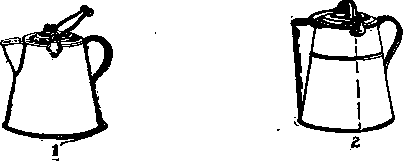
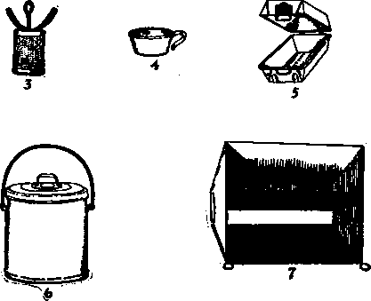
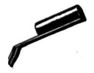
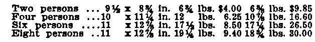

Cooking Kit For Six
Description
This section is from the book "Camp Cookery", by Horace Kephart. Also available from Amazon: Camp Cookery.
Cooking Kit For Six
Nesting in space 11 xl2 7/8 inches, and weighing 17 1/4 lbs. and is fitted with a solid spout that will not melt off. A similar article of tin is known as a "miner's coffee pot." When compact nesting is aimed at, discard the coffee pot in favor of a lidded pail. It has the advantage that no aroma escapes through a spout. Use a percolator of aluminum (cylindrical, not egg-shaped) that is large enough for both coffee and tea, and remove its wings.
Tin cups that nest inside the coffee pot have the lower part of the handle free. Get the l 1/2-pint size (5x2 1/8 in.). Small cups and small plates are a nuisance in camp. Tin is not nice to drink hot fluids from: it makes tea "taste." Aluminum is worse, for it blisters the unwary mouth, I carry my own cnp at my belt or in my pouch, for it is wanted ten times a day. It is of white enameled ware. If every man does this, there will be no trouble about cups nesting.
Plates, too, should be of enameled ware, for it is so much easier to clean than tin or aluminum. Let them be deep and generous (9 1/2-inch soup plates, nesting in the frying pan).
The frying-pan handle is a perennial problem. The best form of detachable handle that I know of is Darling's. A stick can be inserted in it, for long-distance frying, by those who do not know that frying should never be done over a fierce fire, nor that a few coals raked to one side do the trick.
Few camp cooking kits include a baker, although it is almost essential for comfortable life in the woods. The most portable form is the folding reflector sold by most outfitters. It is similar to those that our great-grandmothers used to bake biscuit in, before a hearth fire. The top slants like a shed roof, and the bottom like another shed roof turned upside down, the bread pan being in the middle. The slanting top and bottom reflect heat downward upon the top of the baking and upward against its bottom, so that bread, for instance, bakes evenly all around.
A prime advantage of this cunning utensil is that baking can proceed immediately when the fire is kindled, without waiting for the wood to burn down to coals, and without danger of burning the dough. Fish, flesh, and fowl can be roasted to a turn in this contrivance. It has several better points than an oven, chief of which is its portability, as it folds flat; but it is inferior for corn bread, army bread, etc., and impossible for pot-roasts or braising.
The best size of reflector for two men is 12x 12x8 inches, the pan of which holds just a dozen biscuits. For four men, a good size is 16x18x8. These sizes are the height, width, and depth, respectively, when the oven is open for use. When folded it is only about an inch thick. The 8x12 size weighs 2 pounds, with bake pan; the 8x18 size, 2 3/4 pounds. A canvas carrying case, which is needed, for the baker is frail, adds another pound. A wire broiler packs inside the reflector; it is not necessary for broiling meat, but it is handy for the purpose, and especially for broiling fish.
The old-fashioned Dutch oven of cast iron is too heavy for any but wagon parties, and by them is usually discarded for a camp stove.
A much cheaper utensil than the reflector, and one that can be used like a Dutch oven, with coals underneath and on top, is the sheet-steel baker or roaster designed for use in stove ovens. With the two sections nesting, it is quite portable. The 15x10x7 size weighs, with bake pan, about 4 1/4 pounds.
A good-sized water pail is a great convenience in camp. The best form of all is a galvanized pail with bail ears set below the rim and a tight cover fitting outside the top. It is strong enough to go on a pack saddle, and is an excellent container for perishables. In a canoe it is much 'handier and more reliable than the japanned bread box so often used as a provision chest. With a broad strip of surgeon's plaster around the rim it is perfectly water-tight and the cover cannot come off. Don't be bluffed by its name: it is called a garbage can.
Men who have neither time nor inclination to rummage the stores for "calamities" that will nest would do well to pay extra for outfits already kitted by camp outfitters. Using one outfitter's sets for illustration, we are offered:
1. Coffee Boiler. 6. Baker.
2. Miner's Coffee Pot, C. Water Bucket.
3. Percolator. 7. Reflector.
1. Miner's Cup, 8. Frying Pajj.
Set for. Size, nested. In "Armortteel." In "Alvminol" .
In the four-men and eight-men sets the coffee pots will be found rather stingy. An 8x18 folding reflector, broiler, canvas case, butcher knife, cooking spoon, and percolator would add exactly 4 pounds weight and $6.40 to the price.
"Aluminol" is an aluminum alloy that is tougher and more durable than the common aluminum of the shops. The latter is too soft and too easily bent or dented, and it will not stand dry heat. Aluminum frying pans are worthless: food sticks to them and burns.
"Armorsteel" utensils are made from strong steel stamped in one solid piece, and doubly tinned.
Ordinary tinware is much lighter and cheaper than either of these, but here its merits end. It will not stand rough handling; rusts easily, is hard to clean when greasy, and its soldered joints are always treacherous.
Enameled ware is the easiest of all to keep clean. It is the best material to cook fruit in. Its tendency to chip and flake in cold weather can be tamed by warming gradually, at such times, before exposing to fierce heat. It is not much heavier than any other ware that is strong enough for outdoor service.
Men who must travel with very light equipment should cut out all but the absolutely essential utensils, and have them strong enough for hard service. Ideal outfitting is to have what we want, when we want it, and never to be bothered with anything else.
Continue to: